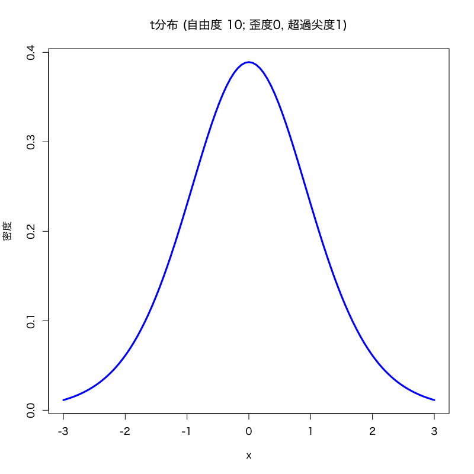
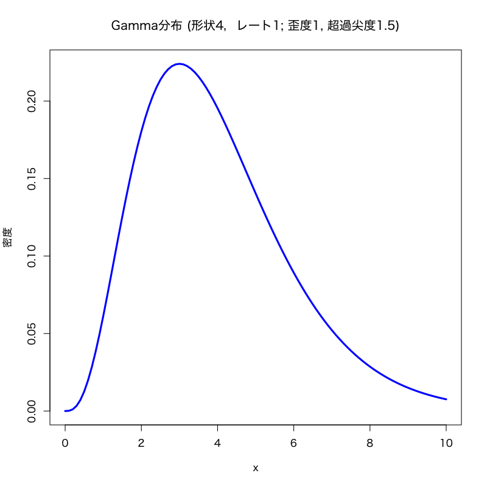

第9講 - 基礎的な記述統計量とデータの集約
村田 昇
一致性 (consistency)
推定量がサンプル数 \(n\to\infty\) のとき確率1で真の値に収束する性質
\begin{equation} P\left(|\hat\theta-\theta|<\varepsilon\right) \to1\quad (\forall\varepsilon,\; n\to\infty) \end{equation}
不偏性 (unbiasedness)
推定量 \(\hat{\theta}\) が不偏であるとは, \(\hat{\theta}\) の平均が真の値 \(\theta\) となる性質
\begin{equation} \mathbb{E}[\hat{\theta}]=\theta \end{equation}
平均 (mean)
\begin{equation} \mu=\mathbb{E}[X] \end{equation}
標本平均 (sample mean)
\begin{equation} \bar{X} =\frac{1}{n}\sum_{i=1}^{n}X_{i} =\frac{X_{1}+\dotsb+X_{n}}{n} % =\frac{X_1+X_2+\cdots+X_n}{n} \end{equation}
分散 (variance)
\begin{equation} \mathrm{Var}(X)=\sigma^{2}=\mathbb{E}[(X-\mu)^{2}] \end{equation}
標本分散 (sample variance)
\begin{equation} S^{2} =\frac{1}{n}\sum_{i=1}^n(X_{i}-\bar{X})^{2} =\frac{(X_{1}-\bar{X})^{2}+\dotsb+(X_{n}-\bar{X})^{2}}{n} % =\frac{(X_1-\bar{X})^2+(X_2-\bar{X})^2+\cdots+(X_n-\bar{X})^2}{n} \end{equation}
標本平均は \(\mu\) の 不偏推定量である
\begin{equation} \mathbb{E}[\bar{X}]=\mu \end{equation}
標本分散は \(\sigma^2\) の 不偏推定量ではない
\begin{equation} \mathbb{E}[S^2]=\frac{n-1}{n}\sigma^2 \end{equation}
不偏性を担保した分散の推定量
\begin{equation} s^2=\frac{n}{n-1}S^2=\frac{1}{n-1}\sum_{i=1}^n(X_i-\bar{X})^2 \end{equation}
基本的な使い方
mean(x, trim = 0, na.rm = FALSE) # 標本平均
var(x, na.rm = FALSE) # 不偏分散
sd(x, na.rm = FALSE) # 標本標準偏差
#' x: ベクトル，データフレームなど
#' na.rm: 欠損値を取り除くか否か
#' 計算方法については ?mean, ?var, ?sd を参照
データ \(X_{1},X_{2},\dotsc,X_{n}\) の 標準化
\begin{equation} Z_{i}=\frac{X_i-\bar{X}}{s}\quad(i=1,2,\dotsc,n) \end{equation}
別の基準での標準化
\begin{equation} T_{i}=10Z_{i}+50\quad(i=1,\dotsc,n) \end{equation}
基本的な使い方
scale(x, center = TRUE, scale = TRUE) # 標準化
#' x: ベクトル，データフレームなど．データフレームの場合は列ごとに標準化
#' center: 中心化(平均0)する (TRUE) か否 (FALSE) か
#' scale: 正規化(分散1)する (TRUE) か否 (FALSE) か
10 * scale(x) + 50 # 偏差値得点への変換
歪度 (skewness)
平均 \(\mu\) , 分散 \(\sigma^2\) で 3次モーメントをもつ確率変数 \(X\)
\begin{equation} \mathrm{skewness}=\frac{\mathbb{E}[(X-\mu)^3]}{\sigma^3} \end{equation}
正の歪度をもつ分布の例
- ガンマ分布 \(\Gamma(\nu,\alpha)\) の歪度は \(2/\sqrt{\nu}\)
尖度 (kurtosis)
平均 \(\mu\) , 分散 \(\sigma^2\) で 4次のモーメントをもつ確率変数 \(X\)
\begin{equation} \mathrm{kurtosis}=\frac{\mathbb{E}[(X-\mu)^4]}{\sigma^4} \end{equation}
超過尖度 (excess kurtosis) :
\begin{equation} % \mathrm{excess\ kurtosis}=\frac{\mathbb{E}[(X-\mu)^4]}{\sigma^4}-3 \mathrm{excess\ kurtosis} = \mathrm{kurtosis}-3 \end{equation}
正規分布と比較して
正の場合，正規分布に比べて平均まわりの密度が 分布の裾の方にまわっていることが多いため, 正規分布より裾が重いと解釈されることが多い
正の超過尖度をもつ分布の例
- 自由度 \(\nu>4\) をもつ \(t\) 分布 \(t(\nu)\) の超過尖度は \(6/(\nu-4)\)
(\(\nu\leq 4\) のときは \(t(\nu)\) は4次モーメントをもたない)- ガンマ分布 \(\Gamma(\nu,\alpha)\) の超過尖度は \(6/\nu\)


標本歪度 (sample skewness)
\begin{equation} \mathrm{skewness}=\frac{\frac{1}{n}\sum_{i=1}^n(X_i-\bar{X})^3}{s^3} \end{equation}
標本尖度 (sample kurtosis)
\begin{equation} \mathrm{kurtosis}=\frac{\frac{1}{n}\sum_{i=1}^n(X_i-\bar{X})^4}{s^4} \end{equation}
歪度・尖度を計算する関数はRの標準機能にはないので
package::e1071 を利用 (自作してもよい)
標本歪度・標本尖度の値は標本平均・分散に比べて ばらつきが大きい ので， サンプル数が少ない場合の計算結果の解釈には注意が必要
基本的な使い方
library("e1071") # package::e1071 の読み込み．必要なら install する
skewness(x, na.rm = FALSE, type = 3) # 標本歪度
kurtosis(x, na.rm = FALSE, type = 3) # 標本超過尖度 (尖度ではない)
#' x: ベクトル，データフレームなど
#' na.rm: 欠損値を取り除くか否か
#' type: 計算法の指定(通常は既定値でよい)
共分散 (covariance)
\begin{equation} \mathrm{Cov}(X,Y)=\mathbb{E}[(X-\mathbb{E}[X])(Y-\mathbb{E}[Y])] \end{equation}
標本共分散 (sample covariance)
\begin{equation} \mathrm{Cov}(X,Y)=\frac{\sum_{i=1}^n(X_i-\bar{X})(Y_i-\bar{Y})}{n-1} \end{equation}
相関 (correlation)
\begin{equation} \rho=\frac{\mathrm{Cov}(X,Y)}{\sqrt{\mathrm{Var}(X)\mathrm{Var}(Y)}} \end{equation}
標本相関 (sample correlation)
\begin{equation} \rho=\frac{\sum_{i=1}^n(X_i-\bar{X})(Y_i-\bar{Y})} {\sqrt{\sum_{i=1}^n(X_i-\bar{X})^2}\sqrt{\sum_{i=1}^n(Y_i-\bar{Y})^2}} \end{equation}
基本的な使い方
cov(x, y = NULL, use = "everything",
method = c("pearson", "kendall", "spearman")) # 共分散
cor(x, y = NULL, use = "everything",
method = c("pearson", "kendall", "spearman")) # 相関
#' x,y: ベクトル，データフレームなど (データフレームの時は列間の関係を計算)
#' use: 欠損値などの扱いに関する指定
#' method: 計算法の指定(通常は既定値 pearson でよい)
データの順序にもとづく記述統計量
\begin{equation} X_{(1)}\leq X_{(2)}\leq\cdots\leq X_{(n)} \end{equation}
中央値 もしくは メディアン (median)
データを昇順に並べ替えたとき中央にくる値
- \(n\) が奇数の場合 : \(X_{((n+1)/2)}\)
- \(n\) が偶数の場合 : \((X_{(n/2)}+X_{(n/2+1)})/2\)
\(100\alpha\) % 分位点 (percentile/quantile)
\(\alpha\in[0,1]\) に対して, その点以下のデータの個数が全体の約 \(100\alpha\) % になるような点
- 第1四分位点 : 25%分位点
- 第2四分位点 : 50%分位点 (中央値と等価)
- 第3四分位点 : 75%分位点
基本的な使い方
median(x, na.rm = FALSE) # 中央値
quantile(x, probs = seq(0, 1, 0.25), na.rm = FALSE,
names = TRUE, type = 7) # 分位点
summary(x) # 最大，最小，四分位点，平均を計算する
#' x: ベクトル
#' na.rm: 欠損値を取り除くか否か
#' probs: 計算する分位点の値
#' names: 出力に関する指定，多数の分位点を計算する場合は FALSE とした方がよい
#' type: 計算法の指定(?quantile を参照)
連続分布の \(100\alpha\) % 分位点
\(0<\alpha<1\) に対して，その分布に従う確率変数を \(X\) としたとき 不等式
\begin{equation} P(X\leq x)\geq\alpha \end{equation}を満たす実数 \(x\) のうち最小のもの
そのような実数 \(q_\alpha\) は常に存在し, 以下が成り立つ．
\begin{equation} P(X\leq q_\alpha)=\alpha \end{equation}
分位点の性質
\(X_1,X_2,\dots,X_n\) が独立同分布な確率変数の列のとき, \(X_1,X_2,\dots,X_n\) の \(100\alpha\) %分位点は， \(n\to\infty\) のとき \(X_1,X_2,\dots,X_n\) の従う 分布の \(100\alpha\) %分位点の 一致推定量 となる．
基本的な使い方
#' 以下は正規分布での計算例
qnorm(p, mean = 0, sd = 1, lower.tail = TRUE, log.p = FALSE)
#' p: 分位点 (100p%)
#' mean, sd: 正規分布の特性を決めるoption
#' lower.tail: TRUE なら P(X<x) を計算．FALSE なら逆
#' log.p: 確率を対数とするか否か (値が小さい場合に利用)
#'
#' xxx分布の場合は以下の形式
qxxx(p, "分布の特性を決める option の指定")
範囲 (range)
最大値と最小値の差 (外れ値の影響を大きく受ける)
四分位範囲 (interquartile range)
第3四分位点と第1四分位点の差
中央絶対偏差 (median absolute deviation)
\(X_1,X_2,\dots,X_n\) の中央値を \(m\) としたとき, \(|X_1-m|,|X_2-m|,\dots,|X_n-m|\) の中央値
基本的な使い方
#' 範囲
range(..., na.rm = FALSE, finite = FALSE)
#' 四分位範囲
IQR(x, na.rm = FALSE, type = 7)
#' 中央絶対偏差
mad(x, center = median(x), constant = 1.4826, na.rm = FALSE,
low = FALSE, high = FALSE)
#' ...: データ (複数渡すことができる)
#' x: 数値ベクトル
#' na.rm: 欠損(NA)の削除 (既定値は削除しない)
#' constant: madの補正値 (既定値は正規分布を仮定して標準偏差に換算)
最頻値 もしくは モード (mode)
データの中で最も頻度が高く現れる値
Created by Noboru Murata | Licensed under CC BY-NC 4.0